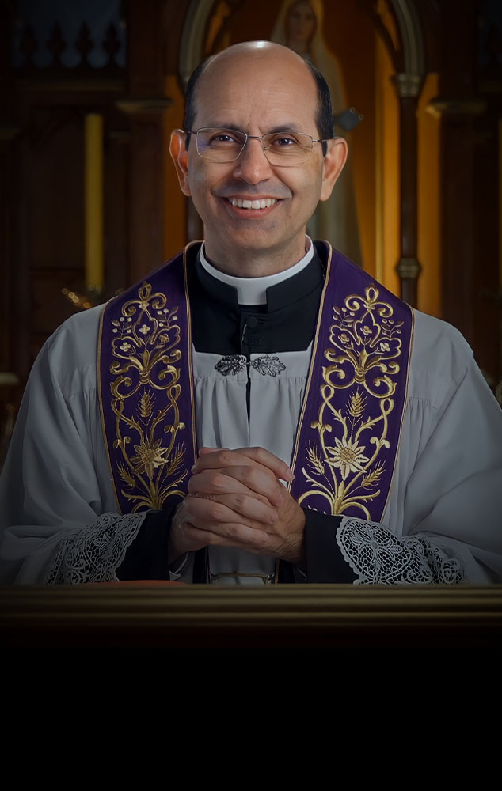

Biografia
Padre Paulo Ricardo de Azevedo Júnior pertence ao clero da Arquidiocese de Cuiabá (Mato Grosso, Brasil).
Nasceu em Recife, Pernambuco, no dia 7 de novembro de 1967, e foi ordenado sacerdote no dia 14 de junho de 1992, pelo Papa São João Paulo II.
É bacharel em Teologia e mestre em Direito Canônico pela Pontifícia Universidade Gregoriana, em Roma.
Foi membro do Conselho Internacional de Catequese da Santa Sé e lecionou nas Faculdades de Filosofia da Santa Sé e em várias outras instituições. Durante quinze anos foi reitor do Seminário Cristo Rei da Arquidiocese de Cuiabá, em Várzea Grande/MT e, atualmente, é vigário da Paróquia Cristo Rei, na mesma cidade.

Desde 2006, mantém este apostolado na internet, dedicado à formação teológica e espiritual de católicos no mundo inteiro. O conteúdo mais significativo desse trabalho está condensado em seus cursos, dentre os quais se destacam “Terapia das Doenças Espirituais”, “Revolução e Marxismo Cultural”, “Engenharia da Santidade”, “Lutero e o Mundo Moderno”, “O Segredo de Teresinha” e muitos outros.
Contatos
- E-mail: contato@padrepauloricardo.com.br
- Telefone: (11) 1234-5678